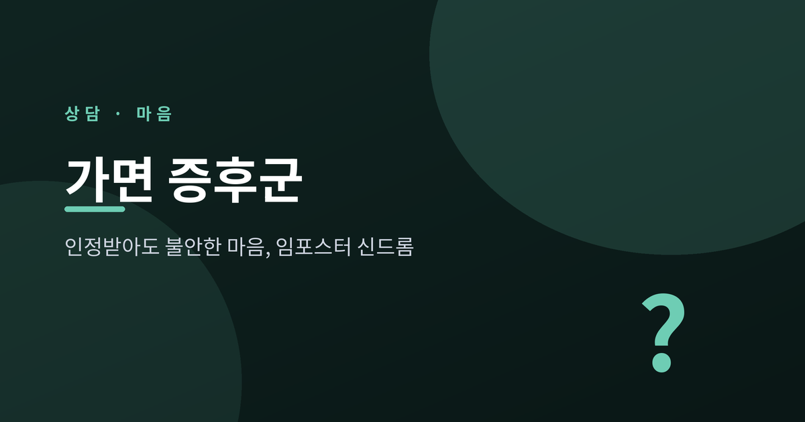
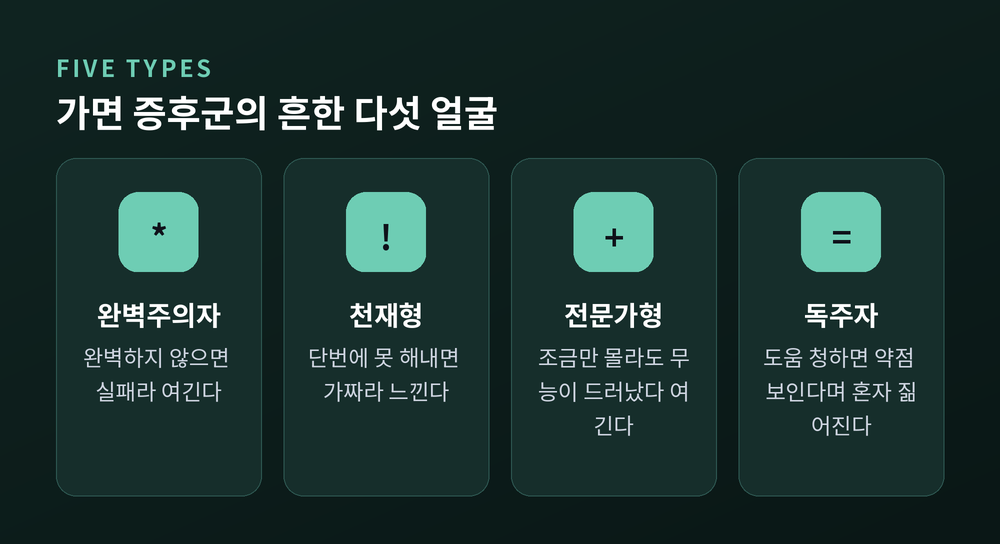
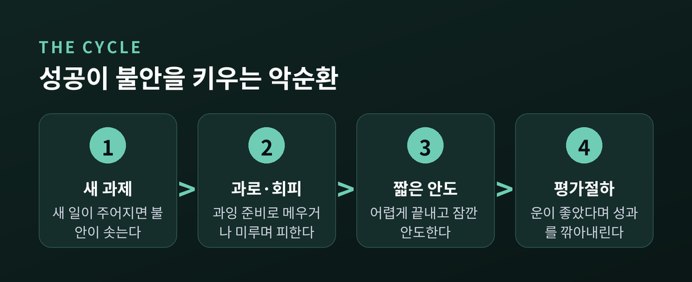
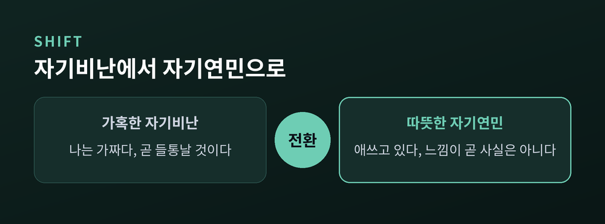

인정받아도 불안한 임포스터 신드롬 다스리기
이번 글에서는 가면 증후군, 곧 임포스터 신드롬을 정리해 보겠습니다.
칭찬을 받고 성과를 내도 "나는 사실 사기꾼 같다"고 느끼는 마음에 관한 이야기입니다.
정의와 유형, 악순환의 구조, 그리고 일상에서 시도해 볼 대처법까지 차근히 살펴보겠습니다.

1978년 심리학자 폴린 클랜스와 수잰 임스가 처음 이름 붙인 현상입니다.
객관적으로 유능하고 인정받는데도, 스스로는 그만큼 유능하지 않다고 믿는 마음을 가리킵니다.
핵심은 성공을 자기 능력으로 받아들이지 못하는 데 있습니다.
"운이 좋았을 뿐", "타이밍이 맞았을 뿐", "사람들을 속였을 뿐"이라며 원인을 자꾸 바깥으로 돌립니다.
그래서 인정이 쌓여도 "언젠가 진짜 실력이 들통날 것"이라는 불안이 좀처럼 가시지 않습니다.
연구 참가자들은 자신을 두고 "지적 사기꾼처럼 느껴진다"고 표현하기도 했습니다.
참고로 이것은 공식 진단명이 아니라, 많은 사람이 겪는 경험의 한 패턴입니다.
널리 인용되는 추정으로는 약 70%의 사람이 평생 한 번쯤 이 감정을 겪는다고 합니다.
미국 노동자의 약 33%는 자신의 능력을 자주 의심한다고 답하기도 했습니다.
결코 드문 일이 아니라는 뜻입니다.
같은 가면이라도 쓰는 모양은 사람마다 다릅니다.

완벽주의자는 완벽하지 않으면 실패라 여깁니다.
천재형은 단번에 해내지 못하면 가짜라고 느낍니다.
전문가형은 조금이라도 모르면 무능이 드러났다고 생각합니다.
독주자는 도움을 청하면 약점이 보인다며 혼자 짊어집니다.
슈퍼우먼·슈퍼맨은 모든 역할에서 동시에 탁월해야 한다고 자신을 몰아붙입니다.
가면 증후군은 한 자리를 맴도는 고리를 만듭니다.

새 과제가 주어지면 불안이 솟습니다.
그 불안을 과잉 준비로 메우거나, 반대로 미루며 피합니다.
어렵게 끝내면 잠깐의 안도가 찾아옵니다.
그러나 곧 "운이 좋았다"며 성과를 깎아내립니다.
그 결과 자기 의심은 더 깊어지고, 다음 과제에서 같은 고리가 다시 돌아갑니다.
예전에는 노력의 증거였던 것이, 지금은 "역시 나는 부족하다"는 근거로 뒤집힙니다.
같은 성과를 두고도 해석만 정반대로 뒤바뀌는 셈입니다.
이 과정이 오래 이어지면 만성적인 긴장과 소진, 우울로 번지기도 합니다.
뜻밖에도 유능하고 성취도 높은 사람일수록 흔합니다.
최초 연구가 성취도 높은 여성을 대상으로 했던 만큼, 여성에게서 특히 두드러집니다.
성별·인종·계층에서 소수자에 속한 사람도 취약합니다.
차별과 미세한 편견이 "나는 이 자리에 어울리지 않는다"는 느낌을 부추기기 때문입니다.
새 환경에 막 들어선 신입과 학생에게도 자주 나타납니다.
다시 말해, 능력이 부족해서가 아니라 진지하게 잘 해내고 싶은 사람일수록 이 마음에 시달리기 쉽습니다.

먼저 생각을 다시 짜는 연습입니다.
"나는 가짜다"라는 자동적 생각이 들면, 그것이 사실인지 증거를 따져봅니다.
사실을 기록하는 것도 큰 힘이 됩니다.
받은 칭찬, 끝낸 일, 고마움의 메시지를 모아두면, 마음이 흔들릴 때 객관적 증거가 되어줍니다.
자신에게 친절해지는 자기연민도 중요합니다.
짧은 자기연민 연습만으로도 임포스터 감정과 완벽주의가 줄었다는 연구가 있습니다.
혼자 삭이지 말고 나누시길 권합니다.
동료와 털어놓으면 "나만 그런 게 아니구나" 하는 안도가 찾아옵니다.
믿을 만한 멘토에게 솔직한 피드백을 구하는 것도 좋은 방법입니다.
다만 이 글은 일반적 정보일 뿐, 전문 상담이나 치료를 대신하지 않습니다.
일상과 업무가 흔들릴 만큼 힘들다면 전문가의 도움을 받으시길 권합니다.
끝으로 한 마디만 더 드리겠습니다.
가면 증후군은 당신이 부족하다는 증거가 아니라, 오히려 진지하게 애쓰고 있다는 흔적에 가깝습니다.
"나는 사기꾼 같다"는 느낌이 들 때, 그 느낌이 곧 사실은 아니라는 점만 기억하셔도 충분합니다.